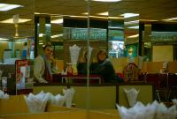
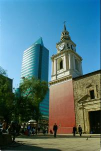

|
Lundi 6 août
Santiago est dominée par 2 colines. Santa Lucia dans le centre ville et San
Cristobal à un kilomètre. Nous commençons par Santa Lucia. Comme on n’a pas
trouvé l’ascenseur, c’est à la force de nos jambes qu’on se retrouve au sommet.
Ca fait transpirer, surtout qu’il fait entre 15 et 20 degrés aujourd’hui. Les
flancs de la coline sont bien arrangés, en jardins et fontaines, des escaliers
allant des uns aux autres. De là, on domine une partie de la ville, ce qui nous
permet de voir quelques buildings mais aussi quelques beaux monuments anciens
aux formes rondes et l’église San Francisco (plus jolie dedans que dehors).
Mais c’est de là surtout qu’on s’est aperçu que Santiago est entourée de montagnes
ou presque. De belles cîmes enneigées se dressent à 53 km de la ville, hautes
de 2500m. Elles font partie de la Cordillère des Andes. Le soir, elles se teintent
de rose. Magique. Y’a pas à dire, la mer c’est génial mais la montagne ça en
impose.
Et puis, on s’est baladé. Il y a plein de quartiers différents: commerçants
(plaza de armas), résidenciels au pied de San Cristobal, restos et bouquinistes,
styles divers, jardins partout, cours d’eau (Rio Mapocho vif). Une belle ville.
Mardi 7 août
Lionel a mal à la gorge, Il refait le coup de Kathmandou, suée la nuit au point
que j’ai cru à une inondation. Mais bon, ce matin la fièvre est tombée. C’est
parti pour San Cristobal. C’est une coline culminant à 860 mètres d’altitude.
On monte en funiculaire, c’est moins fatiguant. Il y a des fous qui montent
en VTT et même en courant. En haut, une énorme statue blanche de la Vierge de
l’immaculée conception (c’est sûrement pour ça qu’elle est blanche, quel fin
esprit de déduction). Superbe vue sur Santiago et les montagnes enneigées qui
brillent sous le soleil. On aperçoit au loin le quartier des grands immeubles
modernes multitailles, multiformes et multicolores. On se croirait à Chicago.
On descend à pied à travers le parc, accompagnés par les petits oiseaux (ce
n’est pas une image, ils sont minuscules). Super agréable, ça sent bon les pins,
mimosas (grands arbres en fleurs) et le printemps. Pourtant c’est bien l’hiver,
ça se voit aux montagnes qui nous entourent et à la goutte au nez du Chtit Lolo!
Mercredi 8 août
On aurait du partir, mais comme on aime Santiago, on va rester jusqu’à vendredi
pour flâner. On en profite pour faire quelques courses, pour s’équiper contre
le grand froid: polaires, pantalons, bonnets, gants, aspirine, pastilles pour
la gorge.
Ici, on a retrouvé un régime alimentaire carné: poulet rôti, cochon de lait
(miam!) avec frites, purée ou salade. Il y a aussi de superbes fruits de mer
et poissons. Curieusement il n’y a pas de chili con carne... (hi hi hi)
N’oublions pas que le Chili, c’est un peu comme une grande côte de 4300 km
de long, avec le désert de l’Atacama au nord (il se dit que dans certaines régions,
des humains n’ont jamais vu la pluie!) et les glaciers de la Patagonie au sud.
Sans compter la partie antarctique du pôle sud qui n’est qu’à 1000 km de la
Patagonie… Et en plus, la Cordillère des Andes borde tout le pays sur l’Est.
Ca donne un pays super diversifié et pareil pour la nourriture. Elevages extensifs
dans le sud (moutons, bovins) et fruits exotiques et légumes dans le nord. Et
aussi plein de patates et de poulets vu qu’on en mange tout le temps. D’ailleurs,
à midi, on a mangé au marché, le Mercado Central, congre grillé et “paila marina”,
des fruits de mer dans une soupe avec en particulier des moules géantes (10
à 15 cm), des normales, des coques, du crabe, des poissons et divers coquillages.
Le tout arrosé d’un bon petit vin blanc. Et oui, c’est ça aussi le Chili!
Jeudi 9 août
Je crois qu’il n’y a pas de bidonvilles à Santiago. Pourtant c’est un pays
qui a un passé plutôt tourmenté... Il y a des pauvres, mais sans doute pas plus
qu’à Paris et très peu font la manche. A la place, ils chantent. On a vu des
familles entières pousser la chansonnette, des adultes, des jeunes, un papi
avec une toute petite guitare, une mamie avec une guitare de taille normale...
Et ce n’est pas désagréable, ces rythmes latinos, du coup, cela attire les gens
et beaucoup donnent. Tous pour ainsi dire.
Suite du voyage : Villarica
|

Chili
Santiago
|

Chili
Santiago
|
|
|